Code
library(dagitty)
# Example DAG
dag <- dagitty("
dag {
Sun -> Brix
Moisture -> Brix
Sun -> Moisture
Rainfall -> Moisture
HarvestDate -> Brix
Variety -> Brix
Region -> Brix
}
")
plot(dag)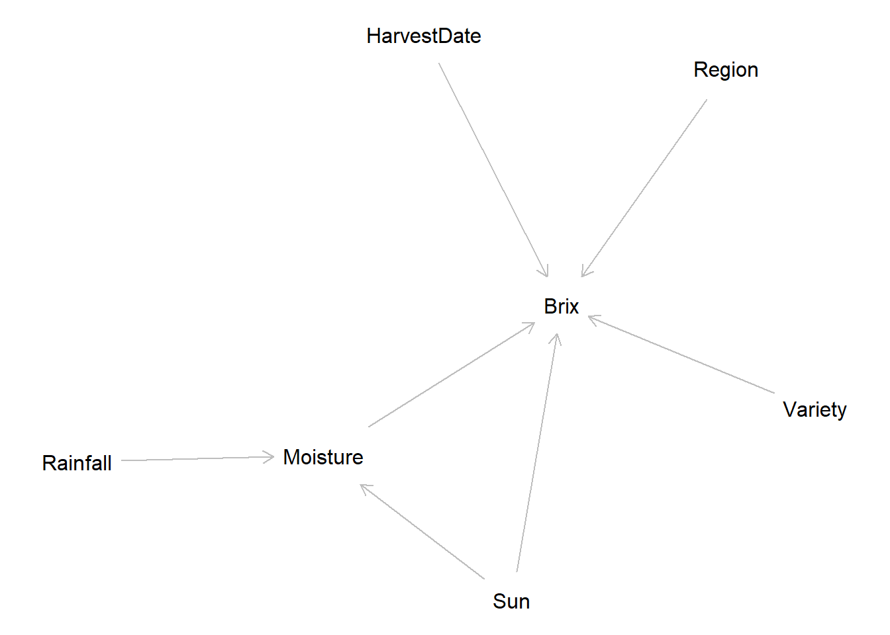
Wine making has been a culture since 6000 BCE and originated from the Caucasus region of which is modern day Georgia and Armenia. During the Soviet occupation, Moscow wanted to streamline the process of wine making, consolidating the variety of grape types for larger export value and quality control. Because of this, many family owned grape varieties as well as environmental factors caused nearly the extinction of hundreds of endemic varieties. Due to the lack of Georgia specific data, the “GRAPE_QUALITY” data set provides general environmental and physiological variables for a multitude of European and American wine regions.
Climate change has affected grape yields, composition and quality as a consequence of changing temperature, precipitation , humidity and radiation. According to a journal by Nature, “about 90% of traditional wine regions in coastal and lowland regions of Spain, Italy, Greece and southern California could be at risk of disappearing by the end of the century because of excessive drought and more frequent heatwaves with climate change.”
Based on this, this phenomena provides context for the long-term effects of climate change on wine development, feasibility and marketing. To explore this, this analysis will explore the effects of environmental qualities, variety type and region on grape quality and Brix. Brix degrees is a measure of the dissolved solids, primarily sugar, in a liquid and acts as a reference to the quality of the grape.
Sugar content (Brix) is a key indicator of grape ripeness and quality.
How does sun exposure, soil moisture, and other environmental and physiological factors influence Brix?
The data used in this project was sourced from Kaggle, an online platform that houses reliable crowd-sourced data sets for data scientists. This project will use the Grape Quality data set found here, hosted by user Mars_1010.
GRAPE_QUALITY data set
The data set contains about 2 months of data relating to grape quality during harvest season across a multitude of regions and varieties of wine grapes. Variables in this data set include:
For this project, the variables that base our analysis include:
Predictor Variables:
We assume for these variables, the numbers presented are averages at the moment of harvest
Response Variable:
Brix: Score of the grapes at the time of harvest, denoting the amount of dissolved solids, a key indicator of quality and readiness of the grape for wine production.
library(dagitty)
# Example DAG
dag <- dagitty("
dag {
Sun -> Brix
Moisture -> Brix
Sun -> Moisture
Rainfall -> Moisture
HarvestDate -> Brix
Variety -> Brix
Region -> Brix
}
")
plot(dag)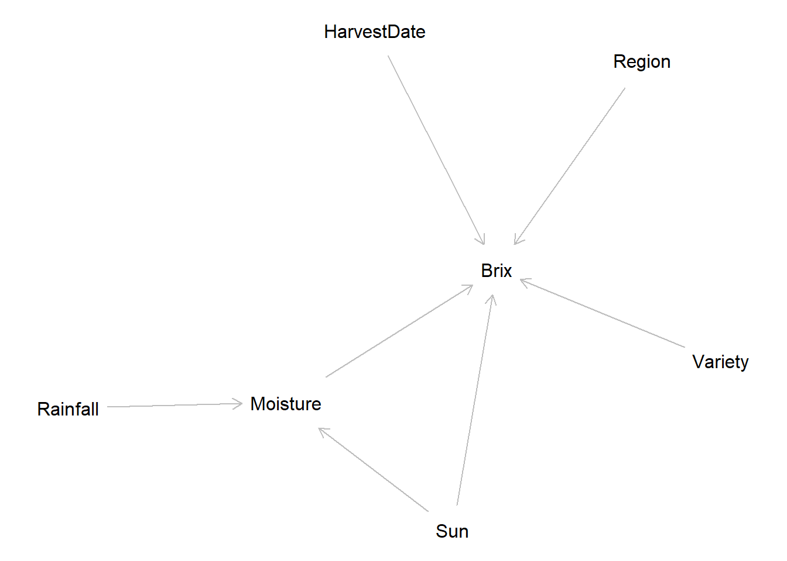
We specify a DAG to represent our assumed causal relationships between predictors and Brix
Confounds: region, variety
Mediators: soil_moisture_percent (between rainfall and Brix), harvest_date (ripening progression)
Collider (caution): variables influenced by both variety and environment (e.g., berry_size_mm) can behave as colliders; avoid conditioning unless justified by the DAG
Predictors:
sun_exposure_hours
soil_moisture_percent
rainfall_mm
acidity_ph
harvest_date
cluster_weight_g
berry_size_mm
Predictors:
sun_exposure_hours
soil_moisture_percent
rainfall_mm
acidity_ph
harvest_date
cluster_weight_g
berry_size_mm
Adjusted for: - variety - region
# Import libraries
library(tidyverse)
library(tidyterra)
library(readr)
library(broom)
library(ggplot2)
library(dplyr)
library(kableExtra)
set.seed(123)# Read in dataset
grapes <- read.csv("data/GRAPE_QUALITY.csv") |>
janitor::clean_names() |>
# Create another date time column for possible analysis related to date of harvest
mutate(harvest_date = as.Date(harvest_date),
days_since_start = as.numeric(harvest_date - min(harvest_date)))Convert harvest_date to date and create days_since_start for temporal visual
# Graph quality category and Brix score, colored by quality category
ggplot(grapes, aes(sun_exposure_hours, sugar_content_brix, colour = quality_category)) +
geom_point(size = 2, alpha = .5) +
theme_minimal() +
labs(
title = "Relationship between Sun Exposure hours and Brix Score",
x = "Hours of Sun Exposure",
y = "Brix Score",
color = "Quality Category"
)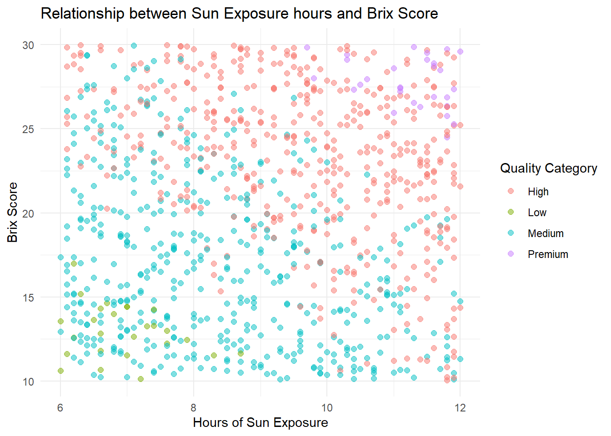
We visualize Brix against sun exposure, colorerd by quality category
# Facet by variety and Brix score
ggplot(grapes, aes(x = sun_exposure_hours, y = sugar_content_brix, color = region)) +
geom_point(alpha = .5) +
geom_smooth(method = "lm", se = TRUE, color = "firebrick") +
facet_wrap(~ region) +
theme_minimal() +
labs(x = "Hours of Sun Exposure",
y = "Brix",
color = "Wine Region")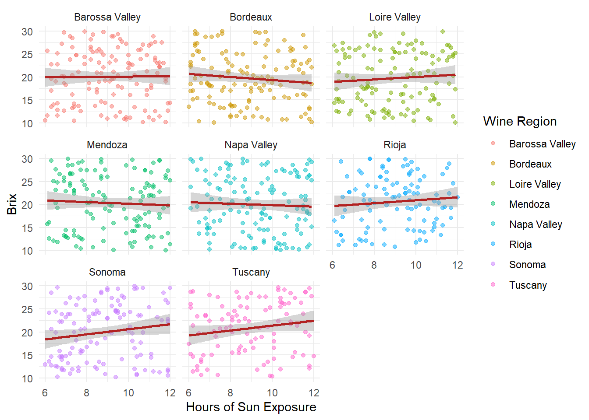
We facet by region to compare sun exposire effects across wine regions
# Graph and color code by quality category
ggplot(grapes, aes(rainfall_mm, sugar_content_brix, colour = quality_category)) +
geom_point(size = 2, alpha = .5) +
geom_smooth(method = "lm", se = TRUE, color = "firebrick") +
facet_wrap(~ quality_category) +
theme_minimal() +
labs(
title = "Relationship between Rainfall and Brix Score",
x = "Milimeters of Rainfall",
y = "Brix Score",
color = "Quality Category"
)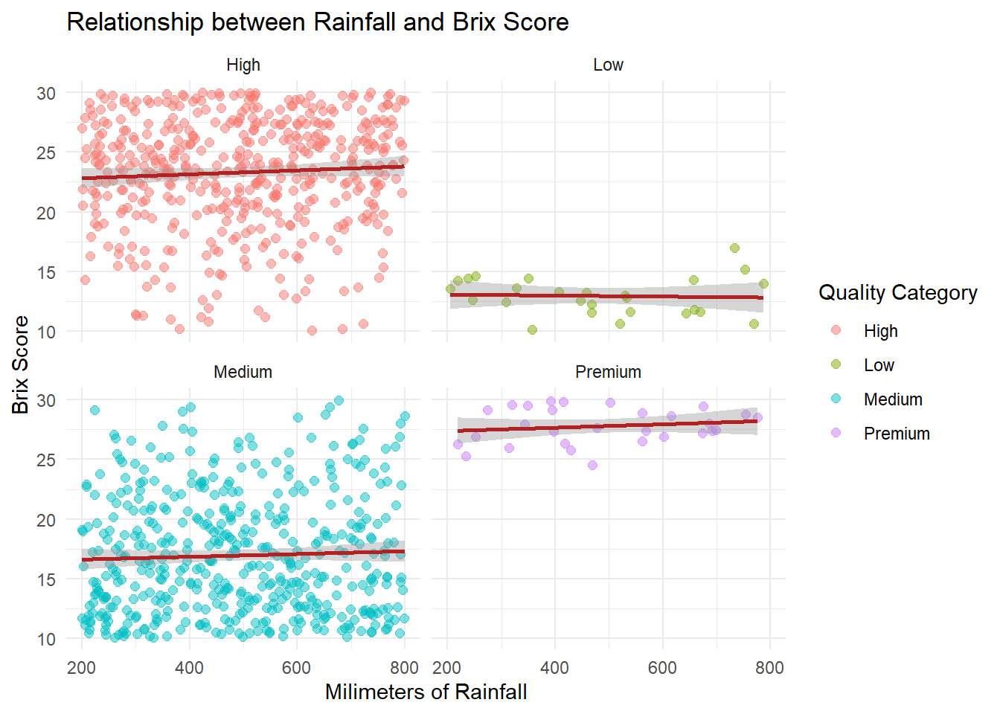
We visualize Brix against rainfall, faceted by quality category
# Plot Brix against rainfall
ggplot(grapes, aes(x = rainfall_mm, y = sugar_content_brix, color = region)) +
geom_point(alpha = .5) +
geom_smooth(method = "lm", se = TRUE, color = "firebrick") +
facet_wrap(~ region) +
theme_minimal() +
labs(title = "Relationship between Rainfall and Brix Score",
x = "Milimeters of Rainfall",
y = "Brix Score",
color = "Quality Category"
)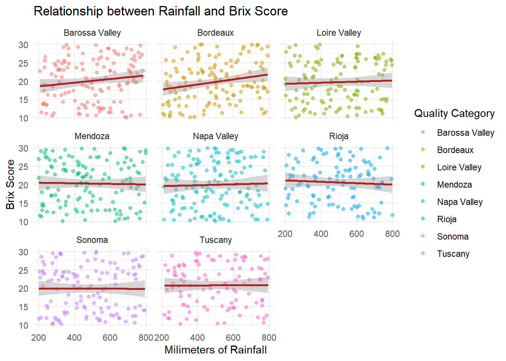
We facet by region to compare rainfall effects
# Plot Brix against quality category
ggplot(grapes, aes(x = quality_category, y =sugar_content_brix)) +
geom_boxplot() +
theme_minimal() +
labs(title = "Relationship between Quality Category and Brix Score",
x = "Quality Category",
y = "Brix Score"
)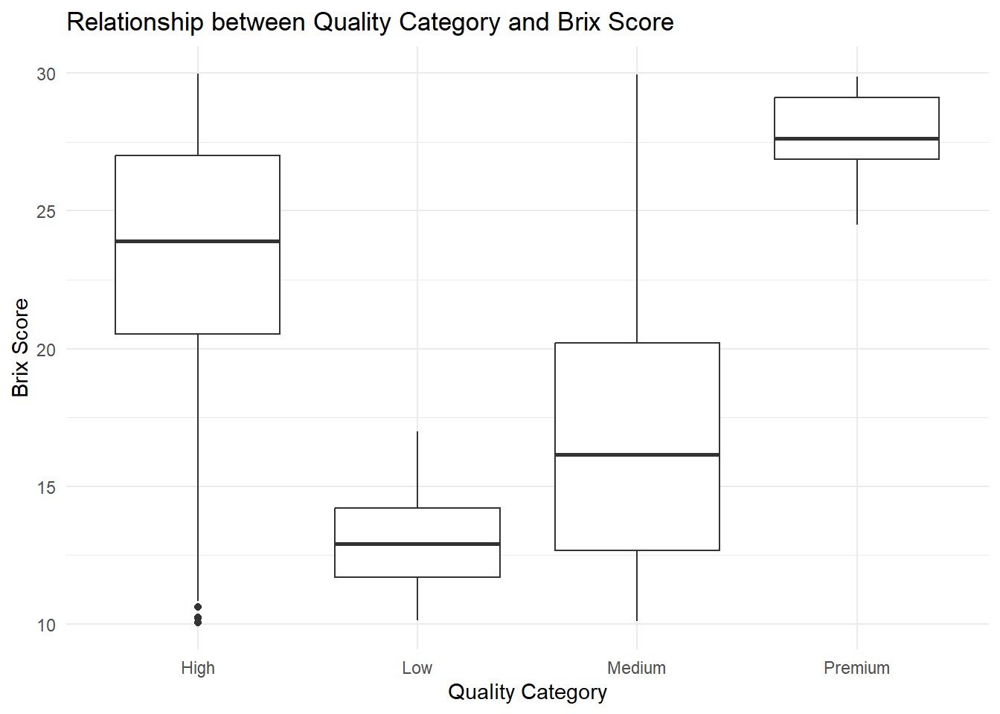
We compare Brix distributions across quality categories
Brix scores seem to be more variable within the Medium and High categories.
# Plot x-axis is based on weekly breaks divided by min and max
ggplot(grapes, aes(x = harvest_date, y = sugar_content_brix, color = quality_score)) +
geom_point(alpha = 0.5) +
geom_smooth(method = "loess", se = FALSE, color = "firebrick") +
facet_wrap(~ variety) +
scale_color_viridis_c(option = "plasma") +
scale_x_date(date_breaks = "1 week", date_labels = "%b %d") +
labs(title = "Brix vs Harvest Date by Variety",
x = "Harvest Date", y = "Sugar Content (°Brix)",
color = "Quality Score") +
theme(axis.text.x = element_text(angle = 90, hjust = 1))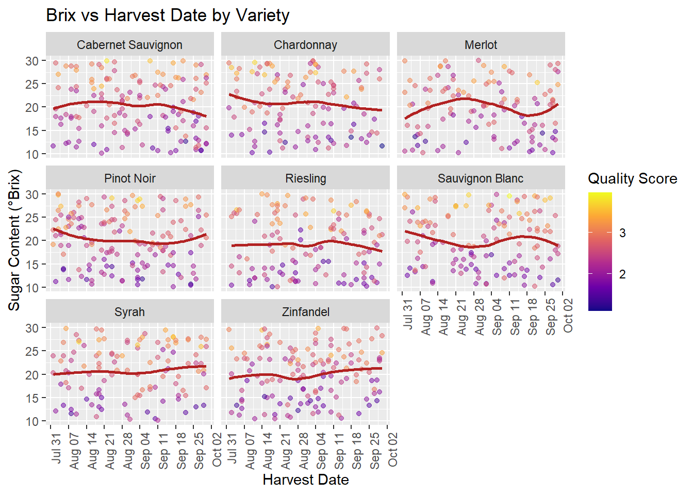
# Plot the graph based on harvest date and region
ggplot(grapes, aes(x = harvest_date, y = sugar_content_brix, color = quality_score)) +
geom_point(alpha = 0.5) +
geom_smooth(method = "loess", se = FALSE, color = "firebrick") +
facet_wrap(~ region) +
scale_color_viridis_c(option = "plasma") +
scale_x_date(date_breaks = "1 week", date_labels = "%b %d") +
labs(title = "Brix vs Harvest Date by region",
x = "Harvest Date", y = "Sugar Content (°Brix)",
color = "Quality Score") +
theme(axis.text.x = element_text(angle = 90, hjust = 1))
The project will use a Gamma regression model with a log link because the response variable Brix is positively continuous and right-skewed.
For this analysis, we assume the observations are independent of the explanatory variables and the response. Furthermore, this model assumes that hours of sun exposure and the amount of rainfall affects Brix score positively or negatively.
Model notation:
\[ Y_i \sim \text{Gamma}(\mu_i, \phi) \\ \log(\mu_i) = \beta_0 + \beta_1 \cdot \text{Sun} + \beta_2 \cdot \text{Moisture} + \beta_3 \cdot \text{Rainfall} + \beta_4 \cdot \text{pH} + \beta_5 \cdot \text{HarvestDate} + \beta_6 \cdot \text{ClusterWeight} + \beta_7 \cdot \text{BerrySize} + \boldsymbol{\beta_8} \cdot \text{Variety} + \boldsymbol{\beta_9} \cdot \text{Region} \]
Log is added to ensure positivity and multiplicative effects
Using assumptions about viticulture, we will create coefficients based on assumed effects. Assumption: Sugar accumulation is multiplicative rather than additive. As per validating our Gamma regression model, we simulate data with true parameters and have a model recover them.
n_sample <- 1000
# Define true value for coefficients for simulation
beta_0 <- 2.7
beta_sun_1 <- .015
beta_moisture_2 <- -0.01
beta_rainfall_3 <- .0003
beta_ph_4 <- .02
beta_weight_5 <- .0001
beta_size_6 <- - .002
# Control variance in Gamma distribution (higher will result in less spread)
phi <- 50We define assumed parameter values for simulation.
# Simulate predictor variable with realistic ranges based on data
sim_data <- tibble(
# Choose continuous predictors based on realistic ranges from data
# Runif generate from uniform distribution, equally likely
# Rnorm generates from a norm distribution, clusters around the mean and spread by sd
sun_exp_hours = runif(n_sample, 6, 12), # Assume hours of sun between 6 - 12 hours
soil_moisture_perc = runif(n_sample, 15, 35), # Assume 15-35% moisture
rainfall_mm = runif(n_sample, 200, 600), # Assume 200 - 600 mm rain
acidity_ph = rnorm(n_sample, 3.3, .2), # Assume ph around 3.3 on average
cluster_weight_g = rnorm(n_sample, 150, 30), # Assume average 150g so we choose rnorm
berry_size_mm = rnorm(n_sample, 15,2), # Assume average is around 15mm and assume normally distributed
# Categorical predictors
variety = sample(c("Chardonnay", "Cabernet","Merlot"), n_sample, replace = TRUE),
region = sample(c("Central Coast","Napa", "Sonoma"), n_sample, replace = TRUE)
)We generate predictor variables with realistic ranges.
# Linear predictor
lin_predict <- beta_0 +
beta_sun_1 * sim_data$sun_exp_hours +
beta_moisture_2 * sim_data$soil_moisture_perc +
beta_rainfall_3 * sim_data$rainfall_mm +
beta_ph_4 * sim_data$acidity_ph +
beta_weight_5 * sim_data$cluster_weight_g +
beta_size_6 * sim_data$berry_size_mm
# Convert mean response to natural scale
mu <- exp(lin_predict)
# Simulate Gamma response
sim_data$sugar_content_brix <- rgamma(n_sample,
shape = phi,
rate = phi / mu)We calculate the linear predictor, transform the mean response and simulate Brix values.
# Fit gamma regression with log link
model_sim <- glm(
sugar_content_brix ~ sun_exp_hours + soil_moisture_perc +
rainfall_mm + acidity_ph + cluster_weight_g + berry_size_mm +
variety + region,
family = Gamma(link = "log"),
data = sim_data
)We fit a Gamma regression model to the simulated data
# Define true parameters
true_params <- c(beta_0, beta_sun_1, beta_moisture_2, beta_rainfall_3,
beta_ph_4, beta_weight_5, beta_size_6)
# Extract estimated parameters from the fitted model
estimated <- coef(model_sim)[1:7]
df_sim <- tibble(
parameter = names(coef(model_sim))[1:7], # First 7 coefficients for comparison
true_value = round(true_params, 3),
estimated = round(coef(model_sim)[1:7], 3)
)
df_sim %>% kbl(caption = "Estimated vs True Parameters") %>%
kable_styling(bootstrap_options = c("striped"))| parameter | true_value | estimated |
|---|---|---|
| (Intercept) | 2.700 | 2.584 |
| sun_exp_hours | 0.015 | 0.019 |
| soil_moisture_perc | -0.010 | -0.010 |
| rainfall_mm | 0.000 | 0.000 |
| acidity_ph | 0.020 | 0.032 |
| cluster_weight_g | 0.000 | 0.000 |
| berry_size_mm | -0.002 | 0.000 |
We compare estimated coefficients to true values to validate model recovery.
The values are not exact but are very close. This indicates the model is accurate and real data can be used.
Statistical hypotheses:
\[ H_0 : \beta_{1} = 0 \quad \text{vs.} \quad H_a : \beta_{1} > 0 \]
\[ H_0:\beta_{2}=0 \quad \text{vs} \quad H_a:\beta_{2} <0 \] We will test whether sun exposure increases Brix and soil moisture decreases Brix, controlling for grape variety and region.
# Check for correlation
predictors <- grapes |>
select(sun_exposure_hours, soil_moisture_percent, rainfall_mm,
acidity_ph, cluster_weight_g, berry_size_mm)
# Check correlations for multicollinearity
corr_matrix <- cor(predictors, use = "complete.obs")
print(round(corr_matrix, 3)) sun_exposure_hours soil_moisture_percent rainfall_mm
sun_exposure_hours 1.000 0.008 0.012
soil_moisture_percent 0.008 1.000 0.038
rainfall_mm 0.012 0.038 1.000
acidity_ph -0.020 -0.028 -0.047
cluster_weight_g 0.040 -0.017 -0.023
berry_size_mm -0.056 0.021 -0.009
acidity_ph cluster_weight_g berry_size_mm
sun_exposure_hours -0.020 0.040 -0.056
soil_moisture_percent -0.028 -0.017 0.021
rainfall_mm -0.047 -0.023 -0.009
acidity_ph 1.000 -0.014 -0.009
cluster_weight_g -0.014 1.000 -0.045
berry_size_mm -0.009 -0.045 1.000We check correlations among the predictors. The correlations are near zero overall. The largest correlation among the pairs of variables are sun exposure with berry size (r = -.056), rainfall with acidity (r = -.047) and cluster weight with berry size (r = -.045)
model <- glm(
sugar_content_brix ~ sun_exposure_hours + soil_moisture_percent +
rainfall_mm + acidity_ph + cluster_weight_g + berry_size_mm +
variety + region,
family = Gamma(link = "log"),
data = grapes
)We fit a Gamma regression to the grape data set
# Extract model estimates with CI to evaluate effects of sun exposure and soil moisture
results <- tidy(model, conf.int = TRUE)
# Filter for main predictors
main_predictors <- results %>%
filter(term %in% c("sun_exposure_hours", "soil_moisture_percent",
"rainfall_mm", "acidity_ph", "cluster_weight_g",
"berry_size_mm"))
# Print clean table
print(main_predictors %>%
select(term, estimate, std.error, p.value) %>%
mutate(across(where(is.numeric), ~round(., 3))))# A tibble: 6 × 4
term estimate std.error p.value
<chr> <dbl> <dbl> <dbl>
1 sun_exposure_hours 0.005 0.005 0.341
2 soil_moisture_percent 0.001 0.001 0.238
3 rainfall_mm 0 0 0.098
4 acidity_ph 0.02 0.023 0.38
5 cluster_weight_g 0 0 0.96
6 berry_size_mm 0.003 0.002 0.25 All the p-values are not significant, indicating little to no effect of variables.
results %>%
select(term, estimate, std.error, p.value, conf.low, conf.high) %>%
mutate(across(where(is.numeric), ~round(., 3))) %>%
kbl(caption = "Gamma Regression Results") %>%
kable_styling(bootstrap_options = c("striped"))| term | estimate | std.error | p.value | conf.low | conf.high |
|---|---|---|---|---|---|
| (Intercept) | 2.756 | 0.123 | 0.000 | 2.516 | 2.995 |
| sun_exposure_hours | 0.005 | 0.005 | 0.341 | -0.005 | 0.016 |
| soil_moisture_percent | 0.001 | 0.001 | 0.238 | -0.001 | 0.003 |
| rainfall_mm | 0.000 | 0.000 | 0.098 | 0.000 | 0.000 |
| acidity_ph | 0.020 | 0.023 | 0.380 | -0.025 | 0.065 |
| cluster_weight_g | 0.000 | 0.000 | 0.960 | 0.000 | 0.000 |
| berry_size_mm | 0.003 | 0.002 | 0.250 | -0.002 | 0.007 |
| varietyChardonnay | 0.024 | 0.037 | 0.518 | -0.049 | 0.097 |
| varietyMerlot | -0.023 | 0.038 | 0.538 | -0.097 | 0.051 |
| varietyPinot Noir | 0.003 | 0.035 | 0.925 | -0.066 | 0.072 |
| varietyRiesling | -0.062 | 0.037 | 0.097 | -0.135 | 0.011 |
| varietySauvignon Blanc | -0.007 | 0.037 | 0.851 | -0.079 | 0.065 |
| varietySyrah | 0.026 | 0.038 | 0.499 | -0.048 | 0.099 |
| varietyZinfandel | -0.010 | 0.036 | 0.778 | -0.081 | 0.061 |
| regionBordeaux | -0.014 | 0.036 | 0.704 | -0.084 | 0.056 |
| regionLoire Valley | -0.022 | 0.036 | 0.548 | -0.093 | 0.050 |
| regionMendoza | 0.013 | 0.036 | 0.716 | -0.057 | 0.084 |
| regionNapa Valley | -0.005 | 0.036 | 0.878 | -0.075 | 0.064 |
| regionRioja | 0.029 | 0.038 | 0.439 | -0.045 | 0.104 |
| regionSonoma | -0.007 | 0.036 | 0.855 | -0.078 | 0.064 |
| regionTuscany | 0.032 | 0.038 | 0.395 | -0.042 | 0.107 |
# Visualize sun exposure vs Brix
pred_sun <- expand_grid(
sun_exposure_hours = seq(min(grapes$sun_exposure_hours, na.rm=TRUE),
max(grapes$sun_exposure_hours, na.rm=TRUE),
length.out=100),
soil_moisture_percent = mean(grapes$soil_moisture_percent, na.rm=TRUE),
rainfall_mm = mean(grapes$rainfall_mm, na.rm=TRUE),
acidity_ph = mean(grapes$acidity_ph, na.rm=TRUE),
cluster_weight_g = mean(grapes$cluster_weight_g, na.rm=TRUE),
berry_size_mm = mean(grapes$berry_size_mm, na.rm=TRUE),
variety = "Chardonnay",
region = "Napa Valley"
)
pred_sun <- pred_sun %>%
mutate(predicted_brix = predict(model, newdata=pred_sun, type="response"))
ggplot() +
geom_line(data=pred_sun, aes(x=sun_exposure_hours, y=predicted_brix),
color="firebrick", linewidth=1.5) +
geom_point(data=grapes, aes(x=sun_exposure_hours, y=sugar_content_brix),
color="black", alpha=0.5) +
labs(title="Gamma Regression: Sun Exposure vs Brix",
x="Sun Exposure (hours)", y="Sugar Content (°Brix)") +
theme_minimal()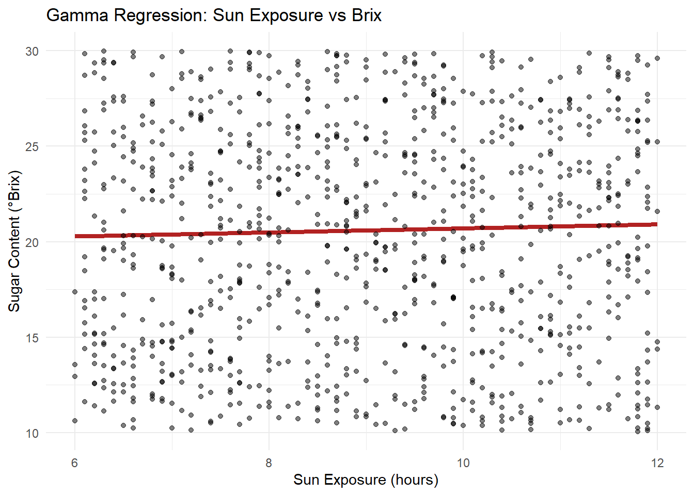
Visualize sun exposure effect on Brix, comparing predicted values with observed.
# Visualize soil moisture vs Brix
pred_moisture <- expand_grid(
soil_moisture_percent = seq(min(grapes$soil_moisture_percent, na.rm=TRUE),
max(grapes$soil_moisture_percent, na.rm=TRUE),
length.out=100),
sun_exposure_hours = mean(grapes$sun_exposure_hours, na.rm=TRUE),
rainfall_mm = mean(grapes$rainfall_mm, na.rm=TRUE),
acidity_ph = mean(grapes$acidity_ph, na.rm=TRUE),
cluster_weight_g = mean(grapes$cluster_weight_g, na.rm=TRUE),
berry_size_mm = mean(grapes$berry_size_mm, na.rm=TRUE),
variety = "Chardonnay",
region = "Napa Valley"
)
pred_moisture <- pred_moisture %>%
mutate(predicted_brix = predict(model, newdata=pred_moisture, type="response"))
ggplot() +
geom_line(data=pred_moisture, aes(x=soil_moisture_percent, y=predicted_brix),
color="firebrick", linewidth=1.5) +
geom_point(data=grapes, aes(x=soil_moisture_percent, y=sugar_content_brix),
color="black", alpha=0.5) +
labs(title="Gamma Regression: Soil Moisture vs Brix",
x="Soil Moisture (%)", y="Sugar Content (°Brix)") +
theme_minimal()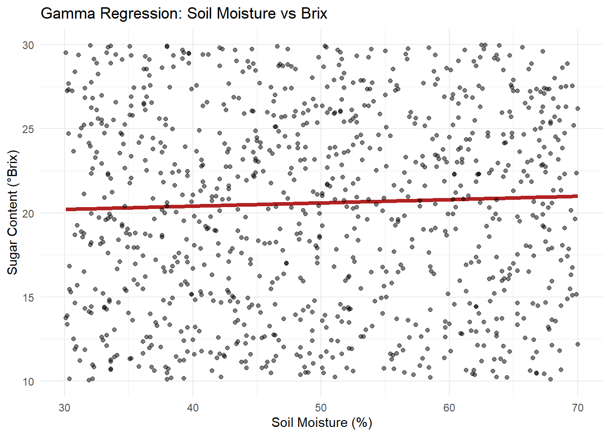
Visualize soil moisture effect on Brix, comparing predicted values with observed.
fixed_variety <- "Chardonnay"
fixed_region <- "Napa Valley"
pred_grid <- expand_grid(
sun_exposure_hours = seq(
min(grapes$sun_exposure_hours, na.rm = TRUE),
max(grapes$sun_exposure_hours, na.rm = TRUE),
length.out = 100
),
soil_moisture_percent = mean(grapes$soil_moisture_percent, na.rm = TRUE),
rainfall_mm = mean(grapes$rainfall_mm, na.rm = TRUE),
acidity_ph = mean(grapes$acidity_ph, na.rm = TRUE),
cluster_weight_g = mean(grapes$cluster_weight_g, na.rm = TRUE),
berry_size_mm = mean(grapes$berry_size_mm, na.rm = TRUE),
variety = fixed_variety,
region = fixed_region
)
# Predictions with uncertainty on link scale
pred_se <- predict(model, newdata = pred_grid, type = "link", se.fit = TRUE)
linkinv <- family(model)$linkinv
pred_grid <- pred_grid %>%
mutate(
eta = pred_se$fit,
se = pred_se$se.fit,
fit = linkinv(eta),
lwr = linkinv(eta - 1.96 * se),
upr = linkinv(eta + 1.96 * se)
)# Check for variability in sun exposure and soil moisture
variation_check <- grapes %>%
summarise(
sun_min = min(sun_exposure_hours),
sun_max = max(sun_exposure_hours),
sun_range = sun_max - sun_min,
sun_sd = sd(sun_exposure_hours),
moisture_min = min(soil_moisture_percent),
moisture_max = max(soil_moisture_percent),
moisture_range = moisture_max - moisture_min,
moisture_sd = sd(soil_moisture_percent)
)
print(variation_check) sun_min sun_max sun_range sun_sd moisture_min moisture_max moisture_range
1 6 12 6 1.736462 30.1 70 39.9
moisture_sd
1 11.59119Sun exposure ranges from 6 to 12 hours per day, with a standard deviation of about 1.7 hours. This indicates moderate variability across vineyards. Soil moisture ranges from 30 to 70%, with a stadard deviation of 11.6%, showing an adequate amount of variability. Both of the predictors have sufficient spread to allow for analysis.
# Fit a simpler model with fewer predictors
model_simple <- glm(
sugar_content_brix ~ sun_exposure_hours + soil_moisture_percent +
variety + region,
family = Gamma(link = "log"),
data = grapes
)
# Tidy results
results_simple <- tidy(model_simple, conf.int = TRUE) %>%
filter(term %in% c("sun_exposure_hours", "soil_moisture_percent"))
print(results_simple %>%
select(term, estimate, p.value) %>%
mutate(across(where(is.numeric), ~round(., 5))))# A tibble: 2 × 3
term estimate p.value
<chr> <dbl> <dbl>
1 sun_exposure_hours 0.00485 0.365
2 soil_moisture_percent 0.001 0.211We fit a reduced model containing only sun exposurem, moisture, variety and region.
Based on the p value > .05, nothing is significant and the effects may be very small or not present.
# Add predictions and residuals
grapes <- grapes %>%
mutate(predicted_brix = predict(model_simple, type = "response"),
residuals = sugar_content_brix - predicted_brix)
ggplot(grapes, aes(x = predicted_brix, y = sugar_content_brix)) +
geom_point() +
geom_abline(slope = 1, intercept = 0, color = "red") +
labs(x = "Predicted Brix", y = "Observed Brix", title = "Model Fit Check")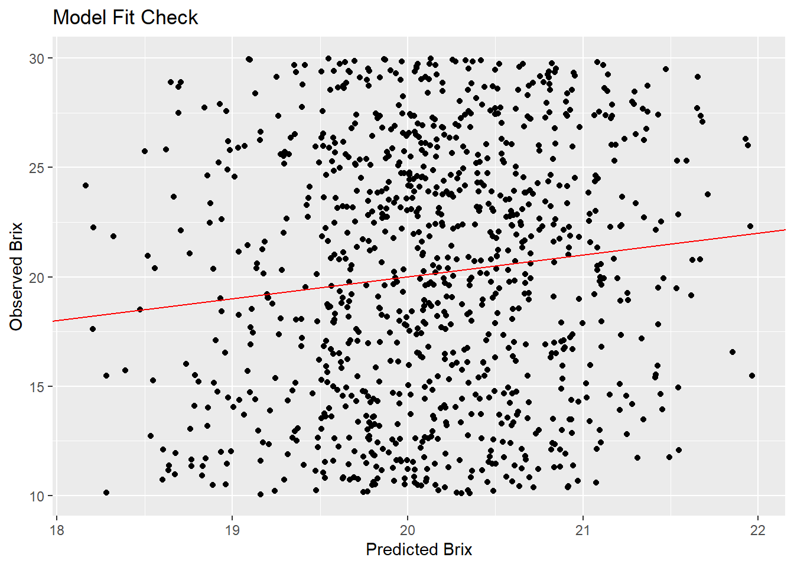
# Model fit diagnostics
correlation <- cor(grapes$predicted_brix, grapes$sugar_content_brix)
r_squared <- correlation^2
r_interp <- r_squared * 100
r_interp[1] 1.34251We calculate approximate R^2 by squaring the correlation between fitted and observed values. The squared correlation between fitted values and observed values give an a r squared value of about 1.3%, indicating the model explains very little variation in Brix.
# Plot Residuals vs predicted
ggplot(grapes, aes(x = predicted_brix, y = residuals)) +
geom_point() +
geom_hline(yintercept = 0, color = "red") +
labs(x = "Predicted Brix", y = "Residuals", title = "Residual Plot")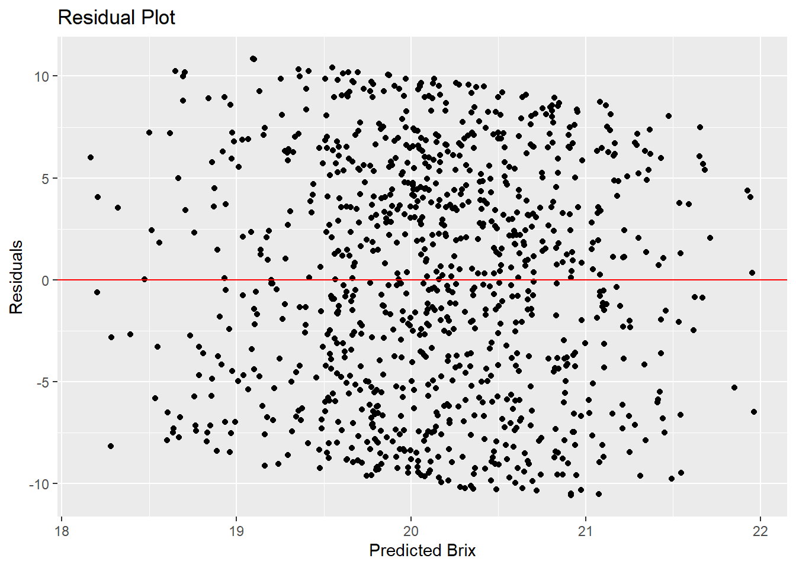
The residuals show random scatter around zero but with no apparent pattern. This suggests the Gamma model with a log link is appropriate. However, the wide range of scatter indicates the model explains very little variation.
# Test the sun_exposure hypothesis
sun_hyp <- results_simple %>% filter(term == "sun_exposure_hours")
# Check values of interest
sun_check <- tibble(
Term = sun_hyp$term,
Estimate = sun_hyp$estimate,
Std_Error = sun_hyp$std.error,
P_Value = sun_hyp$p.value,
CI_Low = sun_hyp$conf.low,
CI_High = sun_hyp$conf.high,
Pct_Change = (exp(sun_hyp$estimate) - 1) * 100
)
sun_check# A tibble: 1 × 7
Term Estimate Std_Error P_Value CI_Low CI_High Pct_Change
<chr> <dbl> <dbl> <dbl> <dbl> <dbl> <dbl>
1 sun_exposure_hours 0.00485 0.00535 0.365 -0.00569 0.0154 0.486The large p-value (>.05), there is no evidence that sun exposure affects Brix in this data set. The confidence interval includes zero, meaning the true effect could be positive, negative, or non-existent.
# Test the soil_moisture decreasing hypothesis
soil_moisture_hyp <- results_simple %>% filter(term == "soil_moisture_percent")
# Check p-value
soil_moisture_check <- tibble(
Term = soil_moisture_hyp$term,
Estimate = soil_moisture_hyp$estimate,
Std_Error = soil_moisture_hyp$std.error,
P_Value = soil_moisture_hyp$p.value,
CI_Low = soil_moisture_hyp$conf.low,
CI_High = soil_moisture_hyp$conf.high,
Pct_Change = (exp(soil_moisture_hyp$estimate) - 1) * 100
)
soil_moisture_check# A tibble: 1 × 7
Term Estimate Std_Error P_Value CI_Low CI_High Pct_Change
<chr> <dbl> <dbl> <dbl> <dbl> <dbl> <dbl>
1 soil_moisture_percent 0.00100 0.000802 0.211 -0.000564 0.00257 0.100The large p-value (>.05), there is no evidence that soil moisture affects Brix in this data set. The confidence interval includes zero, meaning the true effect could be positive, negative, or non-existent.
The Gamma regression model recovered true parameters when tested. In the real data, the predictors showed low correlations (no multicollinearity). However, the model could explain very little of the variation of Brix, suggesting other environmental or physiological factors may be more influential in Brix.
van Leeuwen, C., Sgubin, G., Bois, B., et al. Climate change impacts and adaptations of wine production. Nature Reviews Earth & Environment, 5, 258–275 (2024). https://doi.org/10.1038/s43017-024-00521-5
Getting Started with Gamma Regression | UVA Library. (2025). University of Virginia Library. https://library.virginia.edu/data/articles/getting-started-with-gamma-regression
GammaRegressor — scikit‑learn 1.8.0 documentation. (2025). scikit-learn.org. . https://scikit-learn.org/stable/modules/generated/sklearn.linear_model.GammaRegressor.html
Mars_1010. (2023). Grape Quality [Dataset]. Kaggle. https://www.kaggle.com/datasets/mrmars1010/grape-quality